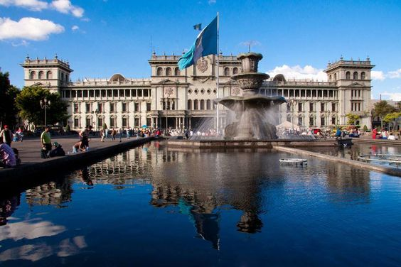

Palacio Nacional de la Cultura
Transcurridos más de sesenta años desde su inauguración,
el inmueble parece dar muestras de los males que resultan con el pasar de los años,
fatiga y envejecimiento, combinado con los resultados
de modificaciones de su organismo e instalaciones debido a su función administrativa.
Para la detección de tales padecimientos, se ha hecho necesario efectuar el diagnóstico
del estado de su conservación, haciendo un examen del organismo edificado,
el que ha determinado los alcances de su deterioro y hacer las
recomendaciones respectivas, de carácter preliminar, a cargo de la
Administración General del Palacio Nacional de la Cultura.
Esta operación trata sobre la detección de los problemas que aquejan al edificio
en sus partes más representativas como organismo arquitectónico,
haciendo una revisión general que brinde el panorama de la situación,
y sea instrumento de toma de decisión para el destino de las intervenciones de conservación y restauración.
Posteriormente al presente diagnostico se deberá elaborar un documento escrito y gráfico,
denominado: “Proyecto de Restauración y Conservación” el que normará las características,
prioridad y el tipo de las intervenciones que amerite la recuperación
del monumento a un periodo de tiempo programado entre inmediato y mediano plazo.
La Oficina de Conservación y Restauración del Palacio Nacional de la Cultura,
ha planificado y elaborado los proyectos necesarios,
los cuales concibieron, tomando en cuenta que este Monumento es Patrimonio Histórico,
Cultural y Artístico, según Acuerdo No. 880 de fecha 07 de noviembre de 1980
del Ministerio de Educación que representa al Poder Ejecutivo.
Desde los inicios del régimen español, fue inminente la necesidad de contar con una
sede de gobierno, de esa suerte en 1528 se construyó la primera Casa de Gobierno en Santiago de Guatemala,
ordenada su construcción por Jorge de Alvarado en el Valle de Almolonga.
En 1549 el Presidente Alonso López de Cerrato traslada la sede de la Audiencia de los Confines,
desde Gracias a Dios en Nicaragua a Santiago de Guatemala, ubicada en el Valle de Panchoy.
En 1761 el Presidente Alonso Fernández de Heredia, inició la construcción de una nueva sede,
bajo la dirección del Capitán e Ingeniero Español, Luis Diez de Navarro.
En 1919 el Presidente Manuel Estrada Cabrera, con motivo del primer centenario de la declaración de la independencia,
colocó la primera piedra del Palacio a un lado de la Plaza de la Constitución,
el encargado del diseño fue el Arquitecto italiano Guido Albani,
pero este proyecto no prosperó por la caída del gobierno.
En 1921, el Presidente Carlos Herrera, contando con muy pocos recursos y
con el Centenario de la Independencia tan cerca, construyo en el término
de tres meses el Palacio del Centenario, que popularmente se conoció como el Palacio
de Cartón, el cual fue consumido por las llamas en 1925.
Durante el Gobierno de Lázaro Chacón, en 1927, se abrió un certamen de dibujo
para la propuesta del palacio Nacional, concurso que fuera ganado por el
Maestro Agustín Iriarte, pero no se realizó.
En 1932, el General Jorge Ubico manda, publicar las bases para el diseño y
construcción del palacio, y el 4 de Julio de 1937 estaba colocando la primera piedra; la construcción
se realizó entre enero de 1939 y el 10 de noviembre de 1943, fecha en la que fuera inaugurado.
El edificio esta diseñado simétricamente a partir de un cuerpo central,
del cual se desprenden dos cuerpos laterales, cada uno de estos con tres niveles y un patio central.
Incluye dentro del proyecto, la restauración de todas las áreas (principales y secundarias) y
la reactivación de áreas poco utilizadas (sótanos y techo); asimismo, se contempla la restauración de las áreas siguientes: exteriores (fachadas y jardines),
impermeabilización de terraza 4o nivel, instalaciones eléctricas (lámparas), ornamentos (concreto,
cerámica, piletas, metal y yesería), pintura (murales, cielos y enlucidos), metales (portones, barandales, cerrajería), madera
(puertas, pisos, zócalos), relojes, tapizado y vitrales, con el propósito
de apoyar la reactivación de áreas útiles del Palacio Nacional de la Cultura
y así promover los proyectos de reactivación cultural.
